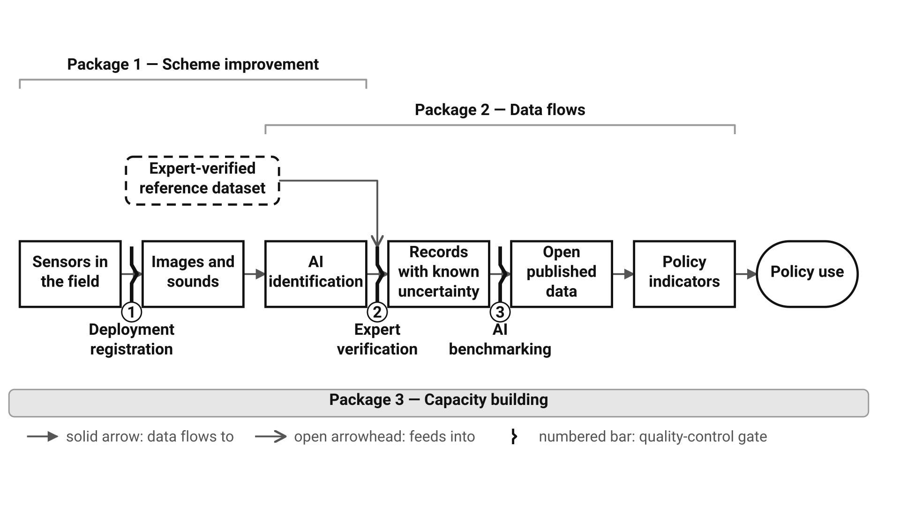

A Hub for Monitoring with Automated and Novel Technologies Based on Image and Sound
Jamie Alison, Aarhus University
Jonas Gaigr, Nature Conservation Agency CZ
Biodiversa+ WP2 · Task 2.5.3 additional activity
MANTIS will form the connective tissue for automated monitoring with novel technologies based on image and sound across Europe.
Aarhus University with the Nature Conservation Agency CZ · 1 January 2027 – 30 September 2028 · Core Activity 3 primary, Core Activities 2 and 4 secondary · a progenitor for a Thematic Hub associated with an EBOCC.
The devices are in the ground already – AMI traps and acoustic recorders across 11 countries in the ABMS pilot (2.6.5), an AMI trap and a CamAlien unit in 10 countries in the IAS pilot (2.6.2), acoustic recorders in ten countries in BiodivPond (2.6.8), four countries in TABMON, and insect camera traps in over 30 countries through MAMBO and related projects. They are operated as independent national efforts, and three bottlenecks follow – not one of them national.
Left unaddressed, these problems risk automated monitoring becoming a source of fragmented, incomparable, or even unprocessed national data – repeating, at greater cost and complexity, the exact coordination problem transnational monitoring should be designed to solve.

…national and regional automated monitoring efforts using image and sound technologies will function as a connected, transnational system rather than isolated national deployments.
€796,850.18 requested – CORE + ENHANCED for the two leads (€422,535.30), plus ≈€54,494.36 for each of six additional participating partners. The activity descopes cleanly: fewer partners means proportionally fewer scaled deployments, not a thinner version of everything. Nothing here needs continued funding to survive 2028 – GitHub Pages and GBIF carry the outputs, and statutory Habitats and Birds Directive duties carry the verification capacity.
MANTIS: A Hub for Monitoring with Automated and Novel Technologies Based on Image and Sound
For more information, contact: